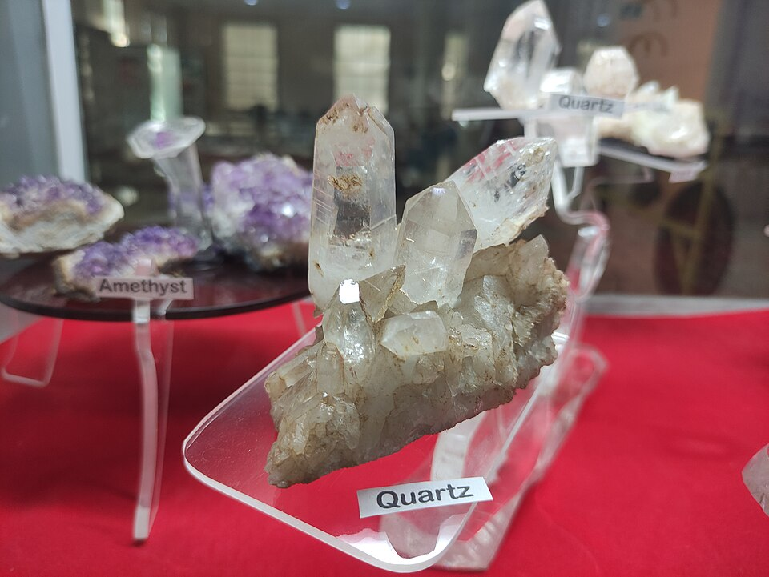
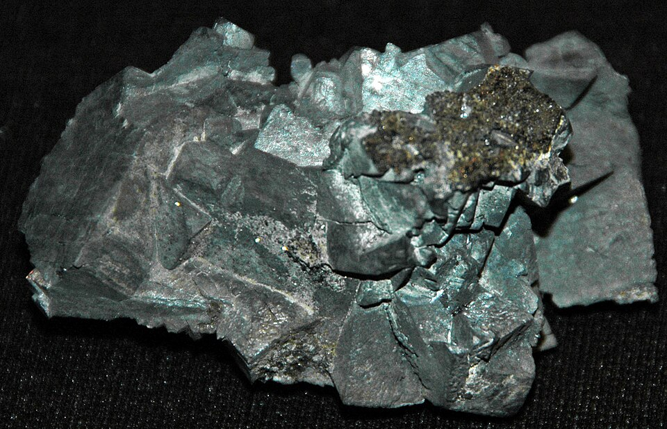
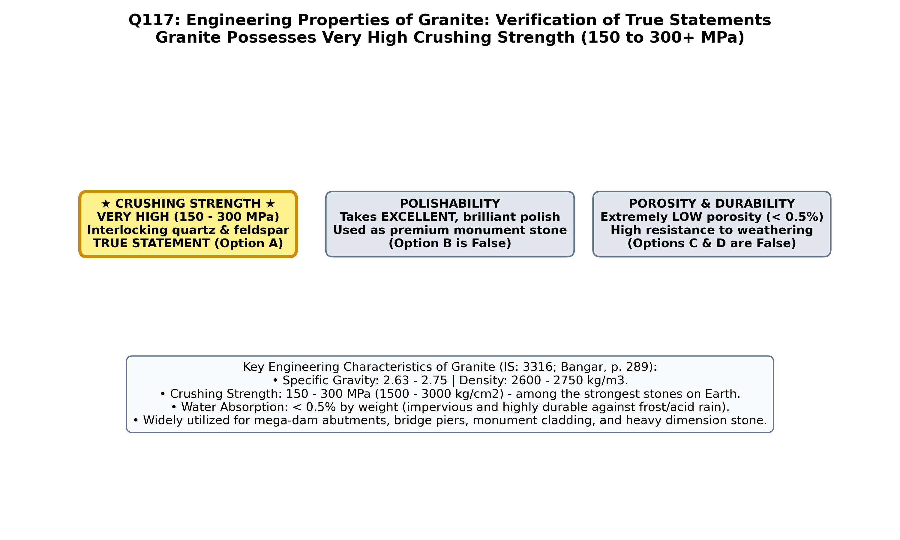
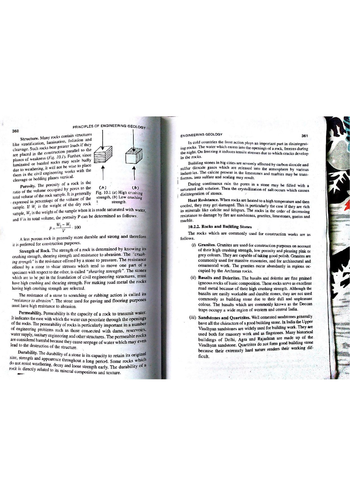
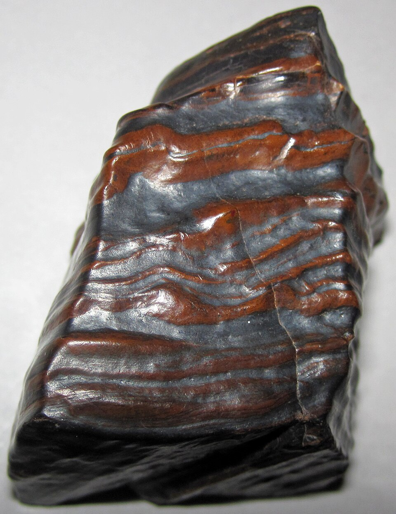

Appendix A: Identification Table for Rock-Forming Minerals
| Mineral | Chemical Formula | Crystal System | Hardness (H) | Sp. Gr. (G) | Cleavage & Fracture | Color & Streak | Diagnostic Laboratory Properties |
|---|---|---|---|---|---|---|---|
| Quartz | $\text{SiO}_2$ | Trigonal / Hexagonal | $7$ | $2.65$ | Cleavage absent; Conchoidal fracture | Colorless/white/varied; White streak | Vitreous luster, scratches glass, unreactive to $\text{HCl}$, prismatic crystals with terminal pyramids. |
| Orthoclase | $\text{KAlSi}_3\text{O}_8$ | Monoclinic | $6$ | $2.56$ | 2 sets at $90^\circ$ (perpendicular) | Pink, flesh-red, white; White streak | Vitreous to pearly luster, right-angle cleavages, simple Carlsbad twinning. |
| Plagioclase | $\text{NaAlSi}_3\text{O}_8\text{--}\text{CaAl}_2\text{Si}_2\text{O}_8$ | Triclinic | $6$ | $2.62\text{--}2.76$ | 2 sets at $\sim 86^\circ$ (oblique) | White, grey, greenish-white; White streak | Polysynthetic albite twinning striations on basal cleavage faces; characteristic of intermediate & basic igneous rocks. |
| Muscovite | $\text{KAl}_2(\text{AlSi}_3\text{O}_{10})(\text{OH})_2$ | Monoclinic | $2\text{--}2.5$ | $2.8$ | 1 set perfect basal cleavage | Colorless, silvery white; White streak | Splits into paper-thin, transparent, highly flexible and elastic sheets. Excellent electrical insulator. |
| Biotite | $\text{K(Mg,Fe)}_3(\text{AlSi}_3\text{O}_{10})(\text{OH})_2$ | Monoclinic | $2.5\text{--}3$ | $2.9\text{--}3.1$ | 1 set perfect basal cleavage | Dark brown, pitch black, bronze; Grey-white streak | Black flexible sheets; readily weathers into chlorite and iron oxides. |
| Augite (Pyroxene) | $(\text{Ca,Na})(\text{Mg,Fe,Al})(\text{Si,Al})_2\text{O}_6$ | Monoclinic | $5\text{--}6$ | $3.2\text{--}3.4$ | 2 sets intersecting at $87^\circ / 93^\circ$ | Dark green to jet black; White to pale green | Stumpy 8-sided prismatic crystals with near-right-angle cleavage intersections. |
| Hornblende (Amphibole) | $\text{Ca}_2(\text{Mg,Fe})_4\text{Al}(\text{Si}_7\text{Al})\text{O}_{22}(\text{OH})_2$ | Monoclinic | $5\text{--}6$ | $3.0\text{--}3.4$ | 2 sets intersecting at $56^\circ / 124^\circ$ | Dark green, brownish-black; Pale grey-green | Elongated prismatic or bladed crystals with characteristic acute/obtuse $56^\circ / 124^\circ$ cleavage intersections. |
| Olivine | $(\text{Mg,Fe})_2\text{SiO}_4$ | Orthorhombic | $6.5\text{--}7$ | $3.3\text{--}3.4$ | Poor cleavage; Conchoidal fracture | Olive-green, yellowish-green; White streak | Sugary/granular aggregates, vitreous luster, high melting point, readily alters to serpentine. |
| Garnet | $\text{X}_3\text{Y}_2(\text{SiO}_4)_3$ | Isometric | $6.5\text{--}7.5$ | $3.5\text{--}4.3$ | No cleavage; Subconchoidal fracture | Deep red, brownish-red; White streak | Rhombic dodecahedral ($12$-faced) crystals, vitreous to resinous luster, high hardness, common in schists and khondalites. |
| Calcite | $\text{CaCO}_3$ | Trigonal | $3$ | $2.71$ | 3 sets perfect rhombohedral ($75^\circ$) | White, colorless, yellow; White streak | Effervesces vigorously with dilute cold $\text{HCl}$ ($\text{CO}_2$ gas bubbling); strong double refraction in Iceland spar. |
| Gypsum | $\text{CaSO}_4 \cdot 2\text{H}_2\text{O}$ | Monoclinic | $2$ | $2.32$ | 1 set perfect micaceous, 2 others distinct | Colorless (selenite), white, fibrous (satin spar) | Scratched by fingernail ($H=2$), pearly/silky luster, sectile, converts to Plaster of Paris at $120^\circ\text{C}$. |
| Talc | $\text{Mg}_3\text{Si}_4\text{O}_{10}(\text{OH})_2$ | Monoclinic | $1$ | $2.7\text{--}2.8$ | 1 set perfect basal | White, pale apple-green; White streak | Soapy, greasy feel to touch; softest mineral on Mohs scale ($H=1$); easily scratched by fingernail. |
Web / Wikimedia Commons & USGS HD🔍 Click to Zoom

Figure A.1: Rock-Forming Silicate Reference — Hexagonal Prismatic Quartz ($\text{SiO}_2$, $H=7$, vitreous luster, conchoidal fracture).
Web / Wikimedia Commons & USGS HD🔍 Click to Zoom

Figure A.2: Rock-Forming Silicate Reference — Monoclinic Orthoclase Feldspar ($\text{KAlSi}_3\text{O}_8$, $H=6$, two perfect cleavages at $90^\circ$).
Appendix B: Identification Table for Metallic Ore Minerals
| Ore Mineral | Composition | Metal | Hardness | Specific Gravity | Color & Luster | Diagnostic Streak | Field Test & Economic Use |
|---|---|---|---|---|---|---|---|
| Hematite | $\text{Fe}_2\text{O}_3$ | Iron ($70\%$) | $5.5\text{--}6.5$ | $5.26$ | Steel-grey to reddish-brown; Metallic to dull | Cherry-red to reddish-brown | Streak is strictly cherry-red; principal iron ore of India (Noamundi, Joda, Bailadila). |
| Magnetite | $\text{Fe}_3\text{O}_4$ | Iron ($72.4\%$) | $6$ | $5.18$ | Iron-black; Metallic | Black | Strongly attracted by hand magnet; lodestone exhibits natural magnetic polarity. |
| Chalcopyrite | $\text{CuFeS}_2$ | Copper ($34.5\%$) | $3.5\text{--}4$ | $4.2$ | Brass-yellow with iridescent tarnish; Metallic | Greenish-black | Distinguished from pyrite by lower hardness (scratched by knife) and from gold by black streak. |
| Galena | $\text{PbS}$ | Lead ($86.6\%$) | $2.5$ | $7.58$ | Lead-grey; Brilliant metallic | Lead-grey | Exceptionally heavy ($G=7.6$); 3 sets perfect cubic cleavage at $90^\circ$; easily sectile. |
| Sphalerite | $\text{ZnS}$ | Zinc ($67\%$) | $3.5\text{--}4$ | $4.0$ | Resinous brown to black; Resinous to adamantine | White to pale yellowish-brown | 6 sets perfect dodecahedral cleavage; emits rotten egg smell ($\text{H}_2\text{S}$) when touched with hot $\text{HCl}$. |
| Pyrolusite | $\text{MnO}_2$ | Manganese ($63.2\%$) | $2\text{--}2.5$ | $4.8$ | Iron-black, steel-grey; Metallic to dull | Bluish-black to black | Soft, soils fingers black; occurs as dendritic fern-like patterns on bedding surfaces. |
| Chromite | $\text{FeCr}_2\text{O}_4$ | Chromium ($68\%\; \text{Cr}_2\text{O}_3$) | $5.5$ | $4.6$ | Iron-black to brownish-black; Sub-metallic | Dark brown | Weakly magnetic; refractory ore; magmatic cumulates in ultramafic rocks (Sukinda). |
| Bauxite | $\text{Al}_2\text{O}_3 \cdot 2\text{H}_2\text{O}$ | Aluminum ($30\text{--}55\%$) | $1\text{--}3$ | $2.0\text{--}2.5$ | White, buff, pinkish-brown; Dull/earthy | White to brownish | Pisolitic / oolitic concentric pea-sized texture; clayey odor when breathed upon. |
Web / Wikimedia Commons & USGS HD🔍 Click to Zoom

Figure B.1: Metallic Ore Reference — Brass-yellow Chalcopyrite ($\text{CuFeS}_2$, $H=3.5\text{--}4$, greenish-black streak) with blue Azurite.
Web / Wikimedia Commons & USGS HD🔍 Click to Zoom

Figure B.2: Metallic Ore Reference — Lead-grey Galena ($\text{PbS}$, $H=2.5$, $G=7.58$, 3 directions of cubic $\{100\}$ cleavage).
Appendix C: Diagnostic Key for Common Rocks
| Rock Class | Rock Name | Color & Grain Size | Essential Mineral Composition | Texture / Structure | Civil Engineering Character |
|---|---|---|---|---|---|
| Igneous Rocks | Granite | Light grey, pink; Coarse to medium | Quartz ($>20\%$), Orthoclase, Plagioclase, Biotite | Holocrystalline, Phaneritic, Equigranular | Excellent foundation ($UCS = 180\text{--}250\text{ MPa}$), high abrasion resistance. |
| Basalt | Dark grey to jet black; Aphanitic (fine) | Augite, Ca-Plagioclase, Magnetite, $\pm$Olivine | Aphanitic, Vesicular, Amygdaloidal | Prime concrete aggregate ($UCS = 150\text{--}200\text{ MPa}$), columnar jointing. | |
| Dolerite | Dark greenish-black; Medium grained | Ca-Plagioclase (Labradorite) and Augite | Ophitic / Sub-ophitic texture | Tough, interlocking laths; difficult to blast; durable road ballast. | |
| Syenite | Light pink, grey; Coarse grained | Alkali feldspar ($>65\%$), Hornblende; Quartz $<5\%$ | Phaneritic, granular | Sound dimension stone, similar strength to granite. | |
| Sedimentary Rocks | Sandstone | White, buff, red; Sand size ($0.06\text{--}2\text{ mm}$) | Quartz grains cemented by silica, calcite, or iron | Clastic, bedded, current-bedded | Siliceous sandstones are superb building stones; argillaceous varieties slake in water. |
| Shale | Grey, black, green; Microscopic clay | Clay minerals (Kaolinite, Illite), Quartz dust | Fissile, laminated, splits into sheets | Unfavorable foundation; low strength ($UCS < 30\text{ MPa}$), prone to swelling and sliding. | |
| Limestone | White, grey, yellow; Fine to crystalline | Calcite ($\text{CaCO}_3$), $\pm$Dolomite | Non-clastic chemical/organic; effervesces in $\text{HCl}$ | Raw material for cement; prone to subsurface karst cavities and solution caverns. | |
| Conglomerate | Variegated; Coarse ($>2\text{ mm}$ rounded pebbles) | Rounded pebbles of quartz/chert in sandy matrix | Rudaceous clastic | Competence depends entirely on cementing matrix (siliceous = strong; ferruginous = moderate). | |
| Metamorphic Rocks | Gneiss | Banded grey, pink, black; Coarse | Quartz, Feldspar, Hornblende, Biotite | Gneissose banding (alternating light & dark) | Strong across foliation ($UCS = 120\text{--}180\text{ MPa}$); anisotropic along foliation. |
| Schist | Silvery grey, green; Medium to fine | Mica (Muscovite/Biotite), Chlorite, Quartz | Schistose foliation (parallel flaky minerals) | Weak foundation along foliation planes; prone to slope slides and tunnel overbreak. | |
| Quartzite | White, pale grey; Fine to medium | Recrystallized Quartz grains ($>95\%$) | Granoblastic / Saccharoidal (sugary) | Extremely hard ($H=7$, $UCS > 200\text{ MPa}$), highly resistant to weathering, abrasive to drill bits. | |
| Marble | White, pink, green; Medium crystalline | Recrystallized Calcite / Dolomite | Granoblastic; effervesces vigorously in $\text{HCl}$ | Valued dimension and decorative stone; soluble in acidic rainwater. |
Web / Wikimedia Commons & USGS HD🔍 Click to Zoom

Figure C.1: Igneous Rock Reference — Phaneritic Holocrystalline Biotite Granite ($UCS = 180\text{--}250\text{ MPa}$).
Web / Wikimedia Commons & USGS HD🔍 Click to Zoom

Figure C.2: Metamorphic Rock Reference — High-grade Gneiss showing alternating quartzo-feldspathic and mafic bands.
Appendix D: Engineering Rock Property Benchmarks
| Rock Type | Unconfined Compressive Strength ($UCS$, MPa) | Tensile Strength (Brazilian, MPa) | Bulk Density (g/cm³) | Porosity (%) | Water Absorption (% by wt) | Modulus of Elasticity ($E$, GPa) |
|---|---|---|---|---|---|---|
| Massive Granite | $150\text{--}240$ | $10\text{--}18$ | $2.65\text{--}2.75$ | $0.4\text{--}1.2$ | $0.2\text{--}0.5$ | $40\text{--}70$ |
| Basalt (Dense) | $140\text{--}220$ | $12\text{--}20$ | $2.80\text{--}3.05$ | $0.5\text{--}2.5$ | $0.3\text{--}1.0$ | $50\text{--}80$ |
| Dolerite | $180\text{--}280$ | $15\text{--}25$ | $2.90\text{--}3.10$ | $0.2\text{--}0.8$ | $0.1\text{--}0.4$ | $60\text{--}90$ |
| Vindhyan Sandstone | $80\text{--}140$ | $5\text{--}10$ | $2.30\text{--}2.55$ | $3.0\text{--}8.0$ | $1.0\text{--}3.5$ | $20\text{--}40$ |
| Massive Limestone | $70\text{--}130$ | $4\text{--}9$ | $2.50\text{--}2.70$ | $1.5\text{--}5.0$ | $0.5\text{--}2.0$ | $30\text{--}60$ |
| Quartzite | $180\text{--}300$ | $14\text{--}24$ | $2.60\text{--}2.70$ | $0.3\text{--}1.0$ | $0.1\text{--}0.4$ | $60\text{--}85$ |
| Gneiss (Sound) | $110\text{--}180$ | $7\text{--}14$ | $2.60\text{--}2.80$ | $0.8\text{--}2.0$ | $0.3\text{--}0.8$ | $35\text{--}65$ |
| Clay Shale | $10\text{--}40$ | $0.5\text{--}3$ | $2.10\text{--}2.40$ | $10.0\text{--}25.0$ | $4.0\text{--}12.0$ | $5\text{--}15$ |
High-Res Color Conceptual Diagram🔍 Click to Zoom

Figure D.1: Engineering Rock Mechanics Benchmark — Factors governing High Unconfined Compressive Strength ($UCS$) and durability of dimension stones.
High-Res Color Conceptual Diagram🔍 Click to Zoom

Figure D.2: Quarrying, Dressing, and Workability Characteristics of Building Stones relative to bedding, rift, grain, and jointing.
Appendix E: Laboratory Testing & Specimen Visual Gallery
Visual summary of rock mechanics test sheets from K. M. Bangar and specimen identification charts.
K. M. Bangar Original Diagram🔍 Click to Zoom

ISRM/BIS Laboratory Crushing & Uniaxial Compressive Strength Reference Sheet (K. M. Bangar).
K. M. Bangar Original Diagram🔍 Click to Zoom

Transverse Flexural Bending & Tensile Strength Testing Reference Sheet (K. M. Bangar).
K. M. Bangar Original Diagram🔍 Click to Zoom

Bulk Density, Specific Gravity, Porosity, and Water Absorption Testing Reference Sheet (K. M. Bangar).
Web / Wikimedia Commons & USGS HD🔍 Click to Zoom

Banded Iron Formation (BHJ/BHQ) — principal host rock of Indian high-grade Hematite iron ores.
Standard Laboratory Testing Specifications
All physical and mechanical rock parameters tabulated above follow the standardized recommendations of the International Society for Rock Mechanics (ISRM) and Bureau of Indian Standards (BIS):
- IS 9143: Method for determination of unconfined compressive strength of rock materials.
- IS 10082: Method for determination of tensile strength of rock materials by Brazilian test.
- IS 13030: Method of test for laboratory determination of water content, porosity, and density of rock material.
- IS 10782: Method for determination of dynamic modulus of elasticity of rocks by ultrasonic pulse velocity.